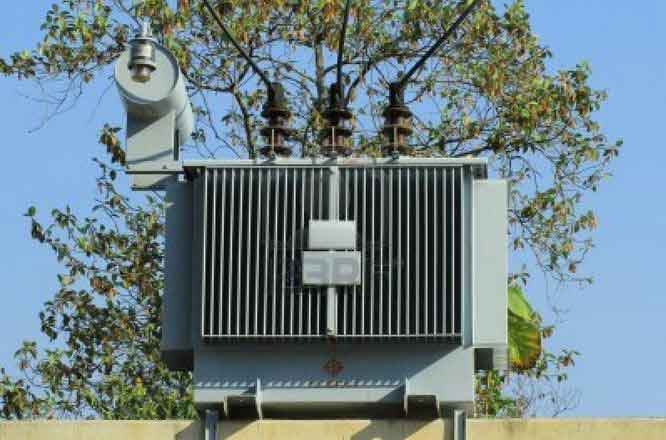

Definition:
Electrical Transformer is a static device that transfers electric power from one circuit to another without change of frequency. Since there is no rotating part in a transformer so it is a static device. Transformer operates on ac supply. In transformer operation two electrical circuits are not connected to each other rather they are interlinked by common magnetic circuit.
Operating Principle:
Transformer works on principle of mutual inductance between two or more inductively coupled coils. Here one of the winding is called primary which is energized by an alternating voltage source and secondary winding is connected to the load. If ac voltage source is applied to primary winding coil it produces alternating current in it. This produces an alternating magnetic flux in the core of the transformer. Alternating magnetic flux links with primary and secondary coil turns and induces in them an emf by self induction and mutual induction respectively. The emf induced in secondary drives a current through the load connected across the secondary winding.

Types:
Transformer based on their functions and purpose of use can be of many types. These are:
1. Step up & Step Down Transformer : These type of transformers are used for step up and step down of voltage levels during transmission of power from generating stations to electrical substations located near demand or consumer center. In step up transformer low voltage winding (l.v) is primary and in step down transformer high voltage (h.v) winding is primary.
2. Single Phase & Three Phase Transformer : Former is a two winding transformer. Three phase transformer is used in three phase system. It is cost effective to use 3 phase transformer but it is not size effective. It is preferable to use 3 single phase transformers than a single three phase transformer.
3. Core & Shell Type : 1 phase transformer is classified as core and shell type according to construction. In core type transformer two windings are arranged as concentric coils. In case of shell type it has sandwiched /disc winding.
4. Distribution & Power Transformer : Distribution transformer are used in distribution network to step down the transmission voltage level for demand centres. Power transformer are operated at peak loads .It is used at each end of transmission line in generating stations and substations for stepping up or down the voltage level.
5. Current (C.T ) & Potential Transformer (P.T) : Electrical instrument transformers (CT & PT) transform high currents and voltages to standardized low and easily measurable values. CT is used for measurement of electric current. The C.T is described by its current ratio from primary to secondary. CT transforms high value current to lower value. PT or voltage transformer is used to step down the system voltage to low value which can be fed to relay for protection purpose.
6. Auto Transformer : It is a single winding transformer where single winding is used as both primary and secondary winding. It has two types - step up and step down autotransformer.
 by
by